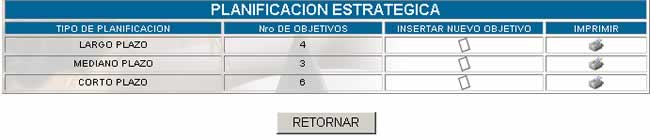
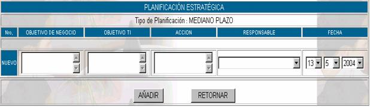

PLANIFICACIÓN ESTRATÉGICA

Cuando usted ingrese a esta opción podrá
realizar la planificación estratégica para el departamento de sistemas, tomando
en cuenta la guía de planificación estratégica del manual de procedimientos de
administración de datos. El gráfico anterior corresponde a la pantalla
principal de esta opción:
Donde:
Tipo de planificación; especifica el tipo de planificación que se hizo, ésta
puede ser de largo, mediano y corto plazo.
Nro. de objetivos; especifica el número de objetivos que se tiene por
cada planificación que se realizó
Nuevo; para insertar una nueva planificación haga click
en y aparecerá la siguiente pantalla.

Imprimir; haciendo click en esta opción usted podrá obtener un reporte de los datos de la planificación.